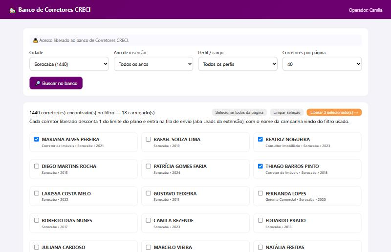

Origem dos contatos · Corretores CRECI
Corretores com CRECI ativo
Base só de profissionais com CRECI ativo. Você filtra, vê o nome de cada corretor e libera.
Quando usarQuando você quer corretores já habilitados numa cidade, por tempo de inscrição.
O que a extensão fazMostra os corretores do filtro; quem você liberar entra na sua fila de envio.
PrecisaO acesso ao Banco de Corretores CRECI liberado no seu login. Sem ele, o botão não aparece.
Passo a passo
- No popup, abra Contatos e clique em Corretores CRECI ↗. Ele abre numa aba do Chrome.
- Filtre por Cidade, Ano de inscrição e Perfil / cargo e clique em 🔎 Buscar no banco.
- Marque os corretores que interessam (ou Selecionar todos da página).
- Clique em Liberar selecionados →. O botão mostra o andamento (ex.: "Liberando 12 de 40") e cada contato é descontado do limite do plano naquele momento.

Problemas comuns
| O que aparece | O que fazer |
|---|---|
| O botão Corretores CRECI não aparece | O acesso não está liberado no seu login. Fale com a RH IMOB. |
| A liberação parou no meio | Busque de novo: quem faltou continua disponível e quem já foi liberado não é cobrado outra vez. |
| Um corretor sumiu da busca | Quem você já liberou não aparece mais na busca. |
Bom saberNa hora do envio, os corretores recebem as mensagens de Corretores que estão em Mensagens e ritmo. Corretores quase nunca têm cargo cadastrado, então evite {cargo} nesses textos.
Os contatos entraram na fila? Agora siga o Guia base: mensagens, envio, bolha do WhatsApp e resultados.
RH IMOB Aceleradora · Guia Corretores CRECI · rhimob.com.br